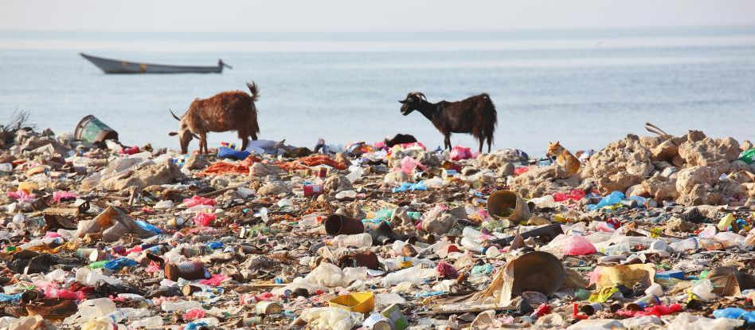
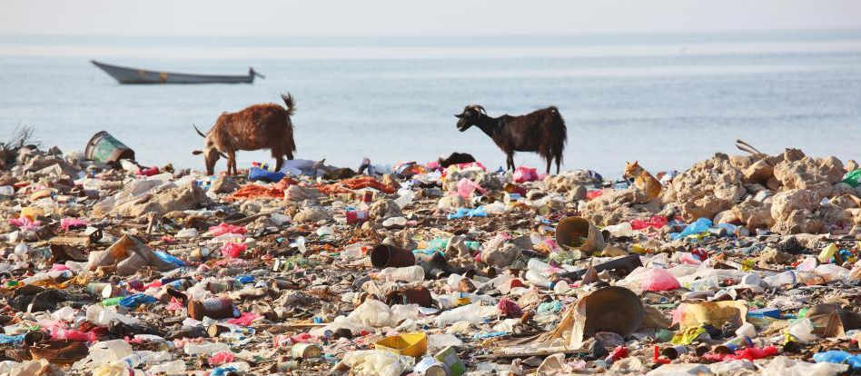

Prospectus

 

We humans are making exponential demands on ourselves and our environment. What I want to do here is explore this thought – the ways in which it is true and not true. Is it a good thing or bad? Can we step off the exponential treadmill?
Part of this will be to show how we recognize exponential behaviour – growth and decay – through specific examples. Also, I will explore some of the mathematical background and history of how exponential behaviour was discovered and wider uses. Almost all mathematics involves exponential or exponential-like objects.
Although the work will have some blogish features, it will not be a linear stream of consciousness. I will feel free to go back and revise and add to stuff that has already been written.
Feel free to comment kindly, and politely. But if this is not for you, never mind. In a way it is more for self-clarification than for seeking fame and fortune.
Who am I?

My name is Mike Cooke, a freelance technology journalist who has worked in the semiconductor and advanced technology sectors since 1997.
Other stuff by me
I frequently contribute to the online magazine Semiconductor Today.